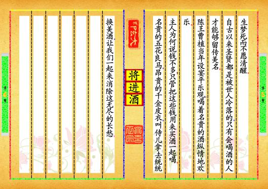

【封面】
预览书籍
全文配置
第【1-2】页
⚫唐代▂┉▂李白¦著⚫⬛原文⬛君不见黄河之水天上来，奔流到海不复回。君不见高堂明镜悲白发，朝如青丝暮成雪。人生得意须尽欢，莫使金樽空对月。天生我材必有用，千金散尽还复来。烹羊宰牛且为乐，会须一饮三百杯。岑夫子，丹丘生，将进酒，杯莫停。与君歌一曲，请君为我侧耳听。钟鼓馔玉何足贵，但愿长醉不复醒。古来圣贤皆寂寞，惟有饮者留其名。陈王昔时宴平乐，斗酒十千恣欢谑。主人何为言少钱，径须沽取对君酌。五花马、千金裘，呼儿将出换美酒，与尔同销万古愁。
预览书籍
全文配置
第【3-4】页
⬛译文⬛你难道没有看见吗？那黄河之水犹如从天上倾泻而来，波涛翻滚直奔大海从来不会再往回流。你难道没有看见，在高堂上面对明镜，深沉悲叹那一头白发？早晨还是黑发到了傍晚却变得如雪一般。人生得意之时就要尽情的享受欢乐，不要让金杯无酒空对皎洁的明月。上天造就了我的才干就必然是有用处的，千两黄金花完了也能够再次获得。我们烹羊宰牛姑且作乐，一次性痛快地饮三百杯也不为多。岑勋，元丹丘，快点喝酒，不要停下来。我给你们唱一首歌，请你们为我倾耳细听。山珍海味的豪华生活算不上什么珍贵，只希望能醉
预览书籍
全文配置
第【5-6】页

生梦死而不愿清醒。自古以来圣贤都是被世人冷落的，只有会喝酒的人才能够留传美名。陈王曹植当年设宴平乐观，喝着名贵的酒纵情地欢乐。主人为何说钱不多？只管把这些钱用来买酒一起喝。名贵的五花良马，昂贵的千金皮衣，叫侍儿拿去统统换美酒，让我们一起来消除这无尽的长愁！
预览书籍
全文配置